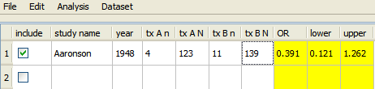

You can enter data into a new data set in either of the following ways:
- Enter the data directly into the fields in the Open Meta-Analyst window.
- Copy and paste data from an existing spreadsheet.
To enter data directly into open Meta-Analyst:
- Click the study name field and type a name for the first study. As an option, you can also enter the year of the study. When you click anywhere outside the study name field, a new row is added to the table for the next study.
- Enter data in the fields to the right of "year". For binary data, the following fields are displayed:
- tx An - Number of events in the treatment group
- tx AN - Number of subjects in the treatment group
- tx Bn - Number of events in the control group
- tx BN - Number of subjects in the control group
An example for binary data is shown below:

The yellow columns, which are automatically calculated from the data, display the effect sizes and bounds for the confidence intervals:
- OR - The effect size - For binary data, the odds ratio is displayed by default.
- lower - The lower bound of the confidence interval
- upper - The upper bound of the confidence interval
Saving Your Data
After you have finished entering data, you can save the data set as follows:
- In the File menu, select save as.
- In the Save File dialog, enter a name for the file in the File name field. By default, the name you entered when you created the data set is displayed, but you can change the name if you wish.
- Click Save.
The file is saved with the extension "oma."
 | Creating a New Data Set | | Opening an Existing Data Set |  |